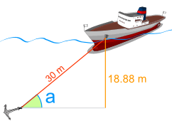
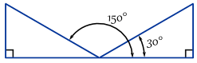

Inverse Sine, Cosine, Tangent

Quick Answer:
For a right-angled triangle:

The sine function sin takes angle θ and gives the ratio opposite hypotenuse
The inverse sine function sin-1 takes the ratio oppositehypotenuse and gives angle θ
And cosine and tangent follow a similar idea.
Example (lengths are only to one decimal place):

And now for the details:
Sine, Cosine and Tangent are all based on a Right-Angled Triangle
They are very similar functions ... so we will look at the Sine Function and then Inverse Sine to learn what it is all about.
Sine Function
The Sine of angle θ is:
- the length of the side Opposite angle θ
- divided by the length of the Hypotenuse
Or more simply:
sin(θ) = Opposite / Hypotenuse
Example: What is the sine of 35°?
|
Using this triangle (lengths are only to one decimal place): sin(35°) = Opposite / Hypotenuse |
The Sine Function can help us solve things like this:

Example: Use the sine function to find "d"
We know
- The angle the cable makes with the seabed is 39°
- The cable's length is 30 m.
And we want to know "d" (the distance down).
The depth "d" is 18.88 m
Inverse Sine Function
But sometimes it is the angle we need to find.
This is where "Inverse Sine" comes in.
It answers the question "what angle has sine equal to opposite/hypotenuse?"
The symbol for inverse sine is sin-1, or sometimes arcsin.

Example: Find the angle "a"
We know
- The distance down is 18.88 m.
- The cable's length is 30 m.
And we want to know the angle "a"
What angle has sine equal to 0.6293...?
The Inverse Sine will tell us.
The angle "a" is 39.0°
They Are Like Forward and Backwards!
- sin takes an angle and gives us the ratio "opposite/hypotenuse"
- sin-1 takes the ratio "opposite/hypotenuse" and gives us the angle.
Example:
Calculator
 |
On the calculator you press one of the following (depending on your brand of calculator): either '2ndF sin' or 'shift sin'. |
On your calculator, try using sin and then sin-1 to see what happens
More Than One Angle!
Inverse Sine only shows you one angle ... but there are more angles that could work.
Example: Here are two angles where opposite/hypotenuse = 0.5

In fact there are infinitely many angles, because you can keep adding (or subtracting) 360°:

Remember this, because there are times when you actually need one of the other angles!
Summary
The Sine of angle θ is:
sin(θ) = Opposite / Hypotenuse
And Inverse Sine is :
sin-1 (Opposite / Hypotenuse) = θ
What About "cos" and "tan" ... ?
Exactly the same idea, but different side ratios.
Cosine
The Cosine of angle θ is:
cos(θ) = Adjacent / Hypotenuse
And Inverse Cosine is :
cos-1 (Adjacent / Hypotenuse) = θ

Example: Find the size of angle a°
cos a° = Adjacent / Hypotenuse
cos a° = 6,750/8,100 = 0.8333...
a° = cos-1 (0.8333...) = 33.6° (to 1 decimal place)
Tangent
The Tangent of angle θ is:
tan(θ) = Opposite / Adjacent
So Inverse Tangent is :
tan-1 (Opposite / Adjacent) = θ

Example: Find the size of angle x°
tan x° = Opposite / Adjacent
tan x° = 300/400 = 0.75
x° = tan-1 (0.75) = 36.9° (correct to 1 decimal place)
Other Names
Sometimes sin-1 is called asin or arcsin
Likewise cos-1 is called acos or arccos
And tan-1 is called atan or arctan
Examples:
- arcsin(y) is the same as sin-1(y)
- atan(θ) is the same as tan-1(θ)
- etc.
The Graphs
And lastly, here are the graphs of Sine, Inverse Sine, Cosine and Inverse Cosine:

Sine

Inverse Sine

Cosine

Inverse Cosine
Did you notice anything about the graphs?
- They look similar somehow, right?
- But the Inverse Sine and Inverse Cosine don't "go on forever" like Sine and Cosine do ...
Let us look at the example of Cosine.
Here is Cosine and Inverse Cosine plotted on the same graph:

Cosine and Inverse Cosine
They are mirror images (about the diagonal)
But why does Inverse Cosine get chopped off at top and bottom (the dots are not really part of the function) ... ?
Because to be a function it can only give one answer
when we ask "what is cos-1(x) ?"
One Answer or Infinitely Many Answers
But we saw earlier that there are infinitely many answers, and the dotted line on the graph shows this.
So yes there are infinitely many answers ...
... but imagine you type 0.5 into your calculator, press cos-1 and it gives you a never ending list of possible answers ...
So we have this rule that a function can only give one answer.
So, by chopping it off like that we get just one answer, but we should remember that there could be other answers.
Tangent and Inverse Tangent
And here is the tangent function and inverse tangent. Can you see how they are mirror images (about the diagonal) ...?

Tangent

Inverse Tangent